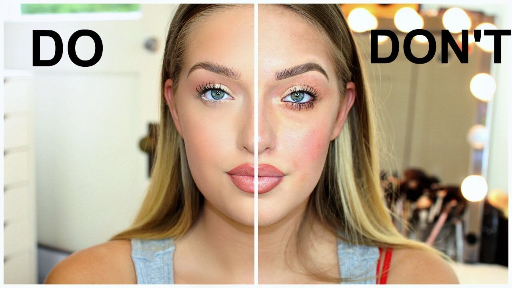

Top Brands : TooFace, Tarte, Benefit, CoverFX, NARS, MAC
Tips: Foundation: If you have sensitive skin, you need to use a brush. If not, you can use a sponge. Also, KNOW YOUR SKIN TYPE (oily, dry, or combination)
Favorite Makeup Artist: Pat McGrath, Nikkie de Jager, Huda Kattan, and Jackie Aina
Sephora: a great source to look up makeup.

DOs : 1. wear your eye-under concealer 2. wear a soft, netural lipstick 3. DO match your foundation shade to the skin on your neck, but also take your décolletage into consideration
DONTs : 1. Do not go too much lighter/darker than your foundation 2. Do not wear a full smokey eye 3. Do not line your lips with a dark pencil 3. Do not smile when you are apply blush